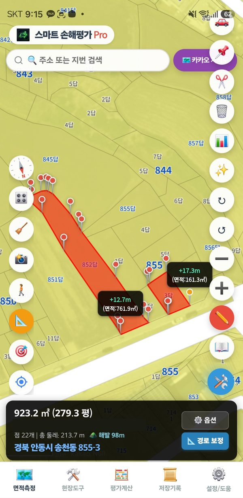

Dibuja el límite catastral de una parcela con un toque, sin tocar sus esquinas. Prosolo en Corea
Esta función usa el mapa catastral nacional de Corea del Sur. Fuera de Corea no hay datos de parcelas, así que mide tocando puntos o caminando.
Una parcela — pulsación larga
Mantén pulsado dentro de una parcela 1–2 segundos. Su límite se dibuja como una zona roja.
Comprueba el área en la barra de estado.
Aunque ya haya otras zonas dibujadas, la pulsación larga añade la parcela como zona nueva.
Varias parcelas — botón de dibujo automático
Toca «🛠️» abajo a la derecha → «✨ Dibujar parcela».
Con el botón activado, toca las parcelas una tras otra. Cada toque añade una parcela y las áreas se suman.
Al terminar, toca «✨ Dibujar parcela» de nuevo para desactivarlo.

Captura de pantalla
Varias parcelas dibujadas una tras otra (versión coreana)
Ajustar la parcela al campo real
Si solo se cultiva una parte de la parcela o el límite no coincide con la realidad, ajústalo con «✂️ Edición de puntos»: toca la línea del borde para añadir un punto y arrastra los puntos para moverlos. Consulta Edición de puntos.
Si además dibujas la misma parcela caminando, la parte superpuesta se cuenta una sola vez.
Si no se dibuja
Las franjas públicas largas como carreteras, acequias, ríos y vías férreas no se dibujan automáticamente. Toca sus esquinas a mano.
Sin internet no se pueden cargar los datos de parcelas.